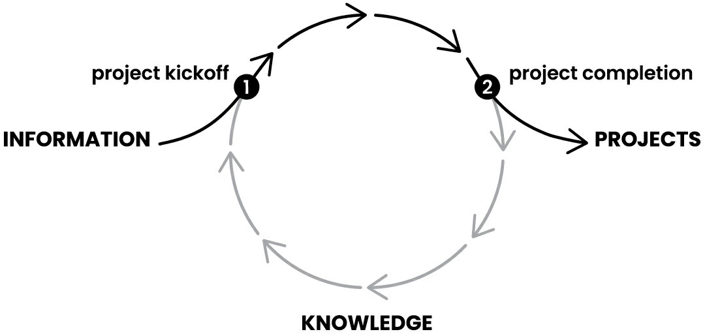

As the potential of your intellectual assets becomes apparent, you’ll start to look for any way to spend your time creating such assets and avoid one-off tasks whenever possible. You will start to seek out ways of acquiring or outsourcing the creation of these assets to others, instead of assuming you have to build them all yourself. These changes will enable you to get things done at a pace that is far beyond what mere “productivity tips” can ever achieve.
My favorite quote about creativity is from the eighteenth-century philosopher Giambattista Vico: Verum ipsum factum. Translated to English, it means “We only know what we make.”
IV. One of my favorite rules of thumb is to “Only start projects that are already 80 percent done.” That might seem like a paradox, but committing to finish projects only when I’ve already done most of the work to capture, organize, and distill the relevant material means I never run the risk of starting something I can’t finish.
The goal of an archipelago is that instead of sitting down to a blank page or screen and stressing out about where to begin, you start with a series of small stepping-stones to guide your efforts. First you select the points and ideas you want to include in your outline, and then in a separate step, you rearrange and sequence them into an order that flows logically. This makes both of those steps far more efficient, less taxing, and less vulnerable to interruption.
How do you create aHemingway_Bridge?
Instead of burning through every last ounce of energy at the end of a work session, reserve the last few minutes to write down some of the following kinds of things in your digital notes:
Write down ideas for next steps: At the end of a work session, write down what you think the next steps could be for the next one.
Write down the current status: This could include your current biggest challenge, most important open question, or future roadblocks you expect.
Write down any details you have in mind that are likely to be forgotten once you step away: Such as details about the characters in your story, the pitfalls of the event you’re planning, or the subtle considerations of the product you’re designing.
Write out your intention for the next work session: Set an intention for what you plan on tackling next, the problem you intend to solve, or a certain milestone you want to reach.
The next time you resume this endeavor, whether that’s the next day or months later, you’ll have a rich set of jumping-off points and next steps waiting for you. I often find that my subconscious mind keeps working in the background to help me improve on those thoughts. When I return to the project, I can combine the results of my past thinking with the power of a good night’s sleep and put them together into a creative breakthrough.
3. Dial Down the Scope: Ship Something Small and Concrete
The problem isn’t a lack of time. It is that we forget that we have control over the scope of the project. We can “dial it down” to a more manageable size, and we must if we ever want to see it finished.
How can you know which direction to take your thinking without feedback from customers, colleagues, collaborators, or friends? And how can you collect that feedback without showing them something concrete? This is the chicken-and-egg problem of creativity: you don’t know what you should create, but you can’t discover what people want until you create something. Dialing Down the Scope is a way of short-circuiting that paradox and testing the waters with something small and concrete, while still protecting the fragile and tentative edges of your work.
Start by picking one project
you want to move forward on. It could be one you identified in Chapter 5, when I asked you to make folders for each active project. It could alternatively be something you know you want to (or have to) get started on. The more uncertain, new, or challenging the project, the better.
Make an outline with your goals, intentions, questions, and considerations for the project. Start by writing out anything already on your mind, and then peruse your PARA categories for related notes and Intermediate Packets. These could include points or takeaways from previously created notes, inspiration from models or examples you want to borrow from, or templates you can use to follow best practices.
Here are some useful questions to ask as you conduct your search:
Is there a book or article you could extract some excerpts from as inspiration?
Are there websites that might have resources you could build upon?
Are there podcasts by experts you could subscribe to and listen to while commuting or doing household chores?
Are there relevant IPs buried in other projects you’ve worked on in the past?
Some material you find will be very succinct and highly polished, while some might be quite rough. It doesn’t matter—your only goal is to get all the potentially usable material in one place. Move all the notes and IPs you might want to use into a new project folder.
Set a timer for a fixed period of time, such as fifteen or twenty minutes, and in one sitting see if you can complete a first pass on your project using only the notes you’ve gathered in front of you. No searching online, no browsing social media, and no opening multiple browser tabs that you swear you’re going to get to eventually. Only work with what you already have. This first pass could be a plan, an agenda, a proposal, a diagram, or some other format that turns your ideas into a tangible artifact.
You might experience some FOMO—that inner Fear of Missing Out—that pushes you to seek out yet another morsel of information somewhere out there. You will probably be tempted to go off and “do more research,” but you are not completing the entire project in one sitting. You are only creating the first iteration —a draft of your essay, a sketch of your app, a plan for your campaign. Ask yourself, “What is the smallest version of this I can produce to get useful feedback from others?”
If you find that you can’t complete the first iteration in one sitting, start by building a Hemingway Bridge to the next time you can work on it. List open questions, remaining to-dos, new avenues to explore, or people to consult. Share what you’ve produced with someone who can give you feedback while you’re away and save their comments in a new note in the same project folder. You can collect this feedback in a private conversation with a trusted colleague, or publicly on social media at full blast, or anywhere in between. Pick a venue for sharing that you feel comfortable with.
If you feel resistance to continuing with this project later, try Dialing Down the Scope. Drop the least important features, postpone the hardest decisions for later, or find someone to help you with the parts you’re least familiar with.
Throughout every step of this process, be sure to keep notes on anything you learn or discover, or any new Intermediate Packets you might want to seek out. Once your biological brain is primed by this first pass through your notes, you’ll start to notice signs and clues related to it everywhere you look. Save those clues as notes as well! Once you’re finished with your first iteration, have gathered feedback, and collected a new set of notes to work with, you’ll be ready for whatever comes next.
The Mise-en-Place Way to Sustainable Productivity
Building a Second Brain is not just about downloading a new piece of software to get organized at one point in time; it is about adopting a dynamic, flexible system and set of habits to continually access what we need without throwing our environment (and mind) into chaos.
It’s not enough to have inner discipline. We also need to follow an outer discipline—a system of principles and behaviors—to channel our energies, thoughts, and emotions productively. A system that adds some structure to the constantly changing flux of information that we interact with every day.
The Project Checklist Habit: The Key to Starting Your Knowledge Flywheel

In Chapter 5 we saw how work is becoming ever more project-centric. Every goal, collaboration, or assignment we take on can be defined as a project, which gives it shape, focus, and a sense of direction. If we consider that these projects are our biggest investments of attention, it’s worth adding a little bit of structure to how we start them. This is where the Project Kickoff Checklist comes in.Project Kickoff Checklist
Here’s my own checklist:
Capture my current thinking on the project.
Review folders (or tags) that might contain relevant notes.
Search for related terms across all folders.
Move (or tag) relevant notes to the project folder.
Create an outline of collected notes and plan the project.
Capture my current thinking on the project.
I often find that the moment a project begins to form in my mind, I start to have ideas and opinions about it. I like to start by creating a blank note and doing a brainstorm of any thoughts that come to mind. This first note is then placed inside a new project folder dedicated to storing all the notes I’ll be creating related to it.
This step can and should be messy: I pour out all my random musings, potential approaches, links to other ideas or topics, or reminders of people to talk to.
Prompts
Here are some questions I use to prompt this initial brainstorm:
What do I already know about this project?
What don’t I know that I need to find out?
What is my goal or intention?
Who can I talk to who might provide insights?
What can I read or listen to for relevant ideas?
Anything that comes to mind from these questions I write down in my starting note. I prefer using bullet points so the information is compact and can easily be moved around.
Success criteria
Define success criteria: What needs to happen for this project to be considered successful? What are the minimum results you need to achieve, or the “stretch goals” you’re striving for?
Checklist #2: Project Completion
The completion of a project is a very special time in a knowledge worker’s life because it’s one of the rare moments when something actually ends. Part of what makes modern work so challenging is that nothing ever seems to finish. It’s exhausting, isn’t it? Calls and meetings seem to stretch on forever, which means we rarely get to celebrate a clear-cut victory and start fresh. This is one of the best reasons to keep our projects small: so that we get to feel a fulfilling sense of completion as often as possible.
Complete Prompts
Here’s my checklist:
Mark project as complete in task manager or project management app.
Cross out the associated project goal and move to “Completed” section.
Review Intermediate Packets and move them to other folders.
Move project to archives across all platforms.
If project is becoming inactive: add a current status note to the project folder before archiving.
Evaluate success criteria: Were the objectives of the project achieved? Why or why not? What was the return on investment?
A Weekly Review Template: Reset to Avoid Overwhelm
Here is my own Weekly Review Checklist, which I usually complete every three to seven days depending on how busy a given week is. The point isn’t to follow a rigid schedule, but to make it a habit to empty my inboxes and clear my digital workspaces on a regular basis to keep them from getting overwhelmed. I keep this checklist on a digital sticky note on my computer, so I can easily refer to it.
Note
Clear my email inbox.
Check my calendar.
Clear my computer desktop.
Clear my notes inbox.
Choose my tasks for the week.
A Monthly Review Template: Reflect for Clarity and Control
While the Weekly Review is grounded and practical, I recommend doing a Monthly Review that is a bit more reflective and holistic. It’s a chance to evaluate the big picture and consider more fundamental changes to your goals, priorities, and systems that you might not have the chance to think about in the busyness of the day-to-day.
Monthly Review Template
Here’s mine Monthly Review Template:
Review and update my goals.
Review and update my project list.
Review my areas of responsibility.
Review someday/maybe tasks.
Reprioritize tasks.
Phần “A Monthly Review Template: Reflect for Clarity and Control” (Mẫu Đánh giá Hàng tháng: Suy ngẫm để Rõ ràng và Kiểm soát) trong nguồn tài liệu mô tả Đánh giá Hàng tháng là một hoạt động mang tính suy ngẫm và toàn diện hơn so với Đánh giá Hàng tuần. Đây là cơ hội để đánh giá bức tranh lớn và xem xét những thay đổi cơ bản đối với mục tiêu, ưu tiên và hệ thống mà bạn có thể không có thời gian nghĩ đến trong sự bận rộn hàng ngày.
Dưới đây là mẫu Đánh giá Hàng tháng được đề xuất:
-
Xem xét và cập nhật mục tiêu: Bắt đầu bằng việc xem xét các mục tiêu theo quý và năm. Tự hỏi những câu hỏi như “Tôi đã có những thành công hoặc thành tựu nào?” và “Điều gì đã xảy ra bất ngờ và tôi có thể học được gì từ đó?“. Bạn sẽ dành thời gian để đánh dấu các mục tiêu đã hoàn thành, thêm các mục tiêu mới xuất hiện hoặc thay đổi phạm vi của các mục tiêu không còn phù hợp.
-
Xem xét và cập nhật danh sách dự án: Tiếp theo, xem xét và cập nhật danh sách các dự án. Điều này bao gồm việc lưu trữ các dự án đã hoàn thành hoặc bị hủy, thêm các dự án mới hoặc cập nhật các dự án đang hoạt động để phản ánh những thay đổi. Bạn cũng sẽ cập nhật các thư mục trong ứng dụng ghi chú để phản ánh những thay đổi này. Điều quan trọng là danh sách dự án phải luôn hiện tại, kịp thời và phản ánh chính xác các mục tiêu và ưu tiên thực tế của bạn, đặc biệt vì dự án là nguyên tắc tổ chức trung tâm của Second Brain.
-
Xem xét các lĩnh vực trách nhiệm: Dành thời gian để suy nghĩ về các lĩnh vực chính trong cuộc sống của bạn, chẳng hạn như sức khỏe, tài chính, các mối quan hệ và cuộc sống gia đình, và quyết định xem có điều gì bạn muốn thay đổi hoặc hành động hay không. Sự suy ngẫm này thường tạo ra các hành động mới (được đưa vào trình quản lý tác vụ) và các ghi chú mới (được lưu giữ trong ứng dụng ghi chú).
-
Xem xét các tác vụ “có thể/một ngày nào đó”: Đây là một danh mục đặc biệt dành cho những việc bạn muốn thực hiện vào một ngày nào đó, nhưng không phải trong tương lai gần, chẳng hạn như “Học tiếng Quan Thoại” hoặc “Trồng một vườn cây ăn trái”. Bạn sẽ dành vài phút để xem xét các tác vụ này để xem có tác vụ nào đã trở nên khả thi hay không.
-
Sắp xếp lại thứ tự ưu tiên cho các tác vụ: Cuối cùng, sau khi hoàn thành tất cả các bước trước và có một cái nhìn tổng thể về các mục tiêu và dự án, bạn sẽ sắp xếp lại thứ tự ưu tiên cho các tác vụ của mình. Bạn có thể ngạc nhiên về mức độ thay đổi trong một tháng; những việc cần làm có vẻ quan trọng vào tháng trước có thể trở nên không liên quan vào tháng này và ngược lại.
Tóm lại, Đánh giá Hàng tháng là một cơ hội quan trọng để tạm dừng, suy ngẫm về tiến trình và điều chỉnh hướng đi của bạn đối với các mục tiêu và trách nhiệm dài hạn, đảm bảo rằng Second Brain của bạn vẫn là một công cụ hữu ích và phù hợp.
The Noticing Habits: Using Your Second Brain to Engineer Luck
Notice
Noticing that an idea you have in mind could potentially be valuable and capturing it instead of thinking, “Oh, it’s nothing.”
Noticing when an idea you’re reading about resonates with you and taking those extra few seconds to highlight it.
Noticing that a note could use a better title—and changing it so it’s easier for your future self to find it.
Noticing you could move or link a note to another project or area where it will be more useful.
Noticing opportunities to combine two or more Intermediate Packets into a new, larger work so you don’t have to start it from scratch.
Noticing a chance to merge similar content from different notes into the same note so it’s not spread around too many places.
Noticing when an IP that you already have could help someone else solve a problem, and sharing it with them, even if it’s not perfect.
When you make your digital notes a working environment, not just a storage environment, you end up spending a lot more time there. When you spend more time there, you’ll inevitably notice many more small opportunities for change than you expect. Over time, this will gradually produce an environment far more
suited to your real needs than anything you could have planned up front. Just like professional chefs keep their environment organized with small nudges and adjustments, you can use noticing habits to “organize as you go.”
Your Turn: A Perfect System You Don’t Use Isn’t Perfect
To make this concrete:
-
There’s no need to capture every idea; the best ones will always come back around eventually.
-
There’s no need to clear your inbox frequently; unlike your to-do list, there’s no negative consequence if you miss a given note.
-
There’s no need to review or summarize notes on a strict timeline; we’re not trying to memorize their contents or keep them top of mind.
-
When organizing notes or files within PARA, it’s a very forgiving decision of where to put something, since search is so effective as a backup option.
-
The truth is, any system that must be perfect to be reliable is deeply flawed. A perfect system you don’t use because it’s too complicated and error prone isn’t a perfect system—it’s a fragile system that will fall apart as soon as you turn your attention elsewhere.
We have to remember that we are not building an encyclopedia of immaculately organized knowledge. We are building a working system. Both in the sense that it must work, and in the sense that it is a regular part of our everyday lives. For that reason, you should prefer a system that is imperfect, but that continues to be useful in the real conditions of your life.
The Path of Self-Expression
Now our challenge isn’t to acquire more information; as we saw in the exploration of divergence and convergence, it is to find ways to close off the stream so we can get something done. Any change in how we interact with information first requires a change in how we think
Mindset Over Toolset—The Quest for the Perfect App
You adopted a default “blueprint” for how you treated incoming information— with anticipation, fear, excitement, self-doubt, or some complex mix of feelings that is unique to you.
The Fear Our Minds Can’t Do Enough
As you build a Second Brain, your biological brain will inevitably change. It will start to adapt to the presence of this new technological appendage, treating it as an extension of itself. Your mind will become calmer, knowing that every idea is being tracked. It will become more focused, knowing it can put thoughts on hold and access them later
Giving Your First Brain a New Job
Instead of trying to optimize your mind so that it can manage every tiny detail of your life, it’s time to fire your biological brain from that job and give it a new one: as the CEO of your life, orchestrating and managing the process of turning
information into results. We’re asking your biological brain to hand over the job of remembering to an external system, and by doing so, freeing it to absorb and integrate new knowledge in more creative ways.
Your Second Brain is always on, has perfect memory, and can scale to any size. The more you outsource and delegate the jobs of capturing, organizing, and distilling to technology, the more time and energy you’ll have available for the self-expression that only you can do.
The Shift from Scarcity to Abundance
Making the shift to a mindset of abundance is about letting go of the things we thought we needed to survive but that no longer serve us. It means giving up low-value work that gives us a false sense of security but that doesn’t call forth our highest selves. It’s about letting go of low-value information that seems important, but that doesn’t make us better people. It’s about putting down the protective shield of fear that tells us we need to protect ourselves from the opinions of others, because that same shield is keeping us from receiving the gifts they want to give us.
The Shift from Obligation to Service
I believe most people have a natural desire within them to serve others. They want to teach, to mentor, to help, to contribute. The desire to give back is a fundamental part of what makes us human.
The purpose of knowledge is to be shared. What’s the point of knowing something if it doesn’t positively impact anyone, not even yourself? Learning shouldn’t be about hoarding stockpiles of knowledge like gold coins. Knowledge is the only resource that gets better and more valuable the more it multiplies. If I share a new way of thinking about your health, or finances, or business, or spirituality, that knowledge isn’t less valuable to me. It’s more valuable! Now we can speak the same language, coordinate our efforts, and share our progress in applying it. Knowledge becomes more powerful as it spreads.
Your Second Brain starts as a system to support you and your goals, but from there it can just as easily be used to support others and their dreams. You have everything you need to give back and be a force for good in the world. It all starts with knowledge, and you have at your disposal an embarrassment of riches.
The Shift from Consuming to Creating
The practice of building a Second Brain is more than the sum of capturing facts, theories, and the opinions of others. At its core, it is about cultivating self-awareness and self-knowledge. ==When you encounter an idea that resonates with you, it is because that idea reflects back to you something that is already within you. Every external idea is like a mirror, surfacing within us the truths and the stories that want to be told.==
This problem—known as “self-ignorance”—has been a major roadblock in the development of artificial intelligence and other computer systems. Because we cannot describe how we know what we know, it can’t be programmed into software.
The process of knowing yourself can seem mystical, but I see it as eminently practical. It starts with noticing what resonates with you. Noticing what seems to call out to you in the external world and gives you a sense of déjà vu. There is a universe of thoughts and ideas and emotions within you. Over time, you can uncover new layers of yourself and new facets of your identity. You search outside yourself to search within yourself, knowing that everything you find has always been a part of you.
Our Fundamental Need for Self-Expression
I discovered something through that experience: that self-expression is a fundamental human need. Self-expression is as vital to our survival as food or shelter. We must be able to share the stories of our lives—from the small moments of what happened today at school to our grandest theories of what life is about.
The world is desperate to hear what you know. You can change lives by sharing yourself with others.
It takes courage and vulnerability to stand up and deliver your message. It takes going against the grain, refusing to be quiet and hidden in the face of fear. Finding your voice and speaking your truth is a radical act of self-worth: Who are you to speak up? Who says you have anything to offer? Who are you to demand people’s attention and take up their time?
Power of a Second Brain
With the power of a Second Brain behind you, you can do and be anything you want. Everything is just information, and you are a master at flowing and shaping it toward whatever future you desire.
Note
Wherever you are at this moment—just starting a practice to consistently take notes, or finding ways to more effectively organize and resurface your best thinking, or generating more original and impactful work—you can always fall back on the four steps of CODE:
Keep what resonates (Capture)
Save for actionability (Organize)
Find the essence (Distill)
Show your work (Express)
Are you committed to producing more and better output with less frustration and stress? Focus on creating one Intermediate Packet at a time and looking for opportunities to share them in ever more bold ways.
As you begin your journey, here are twelve practical steps you can take right now to get your Second Brain started. Each one of them is a starting point to begin establishing the habits of personal knowledge management in your life:
-
Decide what you want to capture. Think about your Second Brain as an intimate commonplace book or journal. What do you most want to capture, learn, explore, or share? Identify two to three kinds of content that you already value to get started with.
-
Choose your notes app. If you don’t use a digital notes app, get started with one now. See Chapter 3 and use the free guide at Buildingasecondbrain.com/resources for up-to-date comparisons and recommendations.
-
Choose a capture tool. I recommend starting with a read later app to begin saving any article or other piece of online content you’re interested in for later consumption. Believe me, this one step will change the way you think about consuming content forever.
-
Get set up with PARA. Set up the four folders of PARA (Projects; Areas; Resources; Archives) and, with a focus on actionability, create a dedicated folder (or tag) for each of your currently active projects. Focus on capturing notes related to those projects from this point forward.
-
Get inspired by identifying your twelve favorite problems. Make a list of some of your favorite problems, save the list as a note, and revisit it any time you need ideas for what to capture. Use these open-ended questions as a filter to decide which content is worth keeping.
-
Automatically capture your ebook highlights. Set up a free integration to automatically send highlights from your reading apps (such as a read
later or ebook app) to your digital notes (see my recommendations at Buildingasecondbrain.com/resources).
-
Practice Progressive Summarization. Summarize a group of notes related to a project you’re currently working on using multiple layers of highlighting to see how it affects the way you interact with those notes.
-
Experiment with just one Intermediate Packet. Choose a project that might be vague, sprawling, or simply hard, and pick just one piece of it to work on—an Intermediate Packet. Maybe it is a business proposal, a chart, a run of show for an event, or key topics for a meeting with your boss. Break the project down into smaller pieces, make a first pass at one of the pieces, and share it with at least one person to get feedback.
-
Make progress on one deliverable. Choose a project deliverable you’re responsible for and, using the Express techniques of Archipelago of Ideas, Hemingway Bridge, and Dial Down the Scope, see if you can make decisive progress on it using only the notes in your Second Brain.
-
Schedule a Weekly Review. Put a weekly recurring meeting with yourself on your calendar to begin establishing the habit of conducting a Weekly Review. To start, just clear your notes inbox and decide on your priorities for the week. From there, you can add other steps as your confidence grows.
-
Assess your notetaking proficiency. Evaluate your current notetaking practices and areas for potential improvement using our free assessment tool at Buildingasecondbrain.com/quiz.
-
Join the PKM community. On Twitter, LinkedIn, Substack, Medium, or your platform(s) of choice, follow and subscribe to thought leaders and join communities who are creating content related to personal knowledge management (#PKM),SecondBrain,BASB, ortoolsforthought. Share your top takeaways from this book or anything else you’ve realized or discovered. There’s nothing more effective for adopting new behaviors than surrounding yourself with people who already have them.
While building a Second Brain is a project—something you can commit to and achieve within a reasonable period of time—using your Second Brain is a lifelong practice. I recommend you revisit Building a Second Brain at various points over time. I guarantee you’ll notice things you missed the first time.
Whether you focus on implementing one aspect of the CODE Method, make a full commitment to the entire process, or something in between, you are taking on a new relationship with the information in your life. You are developing a new relationship to your own attention and energy. You are committing to a new identity in which you are in charge of the information swirling around you, even if you don’t always know what it means.
As you embark on the lifelong path of personal knowledge management, remember that you’ve achieved success before. There have been practices that you’d never heard of before, that are now integral parts of your life. There have been habits and skills that seemed impossible to master, that you now can’t imagine living without. There have been new technologies that you swore you would never embrace that you now use every day. This is the same—what seems unfamiliar and strange now will eventually feel completely natural.
If I could leave you with one last bit of advice, it is to chase what excites you. When you are captivated and obsessed by a story, an idea, or a new possibility, don’t just let that moment pass as if it doesn’t matter. Those are the moments that are truly precious, and that no technology can produce for you. Run after your obsessions with everything you have.
Just be sure to take notes along the way.